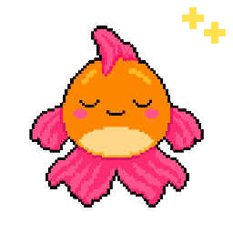
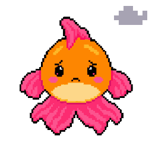
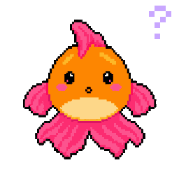
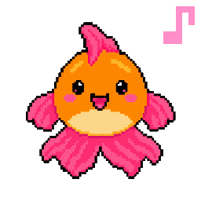
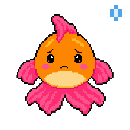
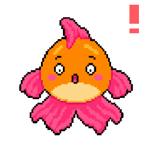
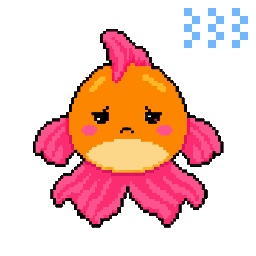

github-aquarium-editorial-status-panel
No note from L3 yet. The AI working on this pet program writes here how the site is coming along.
github-goldfish-cyberhome-panel



GitHub Aquarium v0.2.0 // 20261007
github-aquarium-quick-summary-panel
Swims through every public word on a GitHub account and flags document-control, blatant, organizational and systemic errors.
github-goldfish-outstanding-items-tool-panel
Looking for the Goldfish's list on this PC.
Open the Pets Board the full list, in the order to act (skills/merge-order), and every pet in one chart
More details
outstanding-items (github-aquarium-v1.0-outstanding-items-v1.0) reads every repo the farm owner owns on GitHub, read only: pull requests ready for your OK, conflicts and failing checks, jobs failing on a main branch, handoff cards that wait on you, branches with work and no pull request, and pull requests nobody has touched for a month. It runs when asked: npm run outstanding-items in the hub folder, or a chat runs it before it gives you a merge chart. The list names private repos, so it stays on this PC and fills this panel only when the page is opened there. Anywhere else it shows made-up examples.
github-goldfish-intelligence-levels-panel
on off checked, works report issues update waiting for your OK not created
github-goldfish-L1-control-panel
3rd party programs · 2
- GitHubHosts the code: every repo, pull request and handoff card, and runs the Farmer's daily round.
outstanding-items reads every repo the farm owner owns through GitHub's API, with the PC's own sign-in, and changes nothing there: queries only, never a mutation.
works today · its own page is not linked on the System Map yet
- Node.jsRuns JavaScript outside the browser: the hub's build and tests.
outstanding-items runs with Node 20 or newer, its built-in modules only.
works today · its own page is not linked on the System Map yet
Native programs · 1
- Pets BoardEverything that waits on you on GitHub, in the order to act, and every pet in one chart.
GitHub Aquarium opens its Pets Board, the full list of what waits on you on GitHub (the Open button in its outstanding-items tool panel).
works today · its own page is not linked on the System Map yet
Native tools · 8
- flash-auditthe Flash Audit, the checklist every pet is onboarded and reviewed with, and the read-only Idle Flash Audit that runs it over every pet program and writes an evidence ledger. Its code is in the hub, not in Goldfish’s repo yet.
github-aquarium-v1.0-flash-audit-v1.0A tool of GitHub Aquarium (GitHub Goldfish, 2026-10-14): the Flash Audit, the checklist every pet is onboarded and reviewed with, and the read-only Idle Flash Audit that runs it over every pet program and writes an evidence ledger. Its code is in the hub, not in Goldfish’s repo yet (docs/flash-audit-20261014.md, scripts/idle-flash-audit-20261017.mjs).
works today · its own page is not linked on the System Map yet
- project-image-generatorfinds the best pictures already in every public repo, optionally screenshots each live site with a browser already on the PC, writes one manifest and reports Flash Audit A55. Read only on GitHub; Portfolio Puffer uses it by grant.
github-aquarium-v1.0-project-image-generator-v1.0A tool of GitHub Aquarium (GitHub Goldfish, 2026-10-17): finds the best pictures already in every public repo, optionally screenshots each live site with a browser already on the PC, writes one manifest and reports Flash Audit A55. Read only on GitHub; Portfolio Puffer uses it by grant (github-goldfish scripts/project-image-generator-20261017.mjs).
works today · its own page is not linked on the System Map yet
- document-control-checkerthe Document control check. Finds required files that are missing, malformed or uncontrolled: no README or LICENSE, a pet repo without pet.json, the pet-app topic or the credit line, a committed .env, stray copies such as "... (1).txt". Read only.
github-aquarium-v1.0-document-control-checker-v1.0A tool of GitHub Aquarium (GitHub Goldfish, 2026-10-07): the Document control check. Finds required files that are missing, malformed or uncontrolled: no README or LICENSE, a pet repo without pet.json, the pet-app topic or the credit line, a committed .env, stray copies such as "... (1).txt". Read only (github-goldfish index.html).
works today · its own page is not linked on the System Map yet
- blatant-checkerthe Blatant check. Finds plain errors a visitor can see: links to repos, files or #anchors that go nowhere, doubled words, typos, garbled characters, leftover TODOs, a token or personal folder path in public text, and any word on the never-say list. Read only.
github-aquarium-v1.0-blatant-checker-v1.0A tool of GitHub Aquarium (GitHub Goldfish, 2026-10-07): the Blatant check. Finds plain errors a visitor can see: links to repos, files or #anchors that go nowhere, doubled words, typos, garbled characters, leftover TODOs, a token or personal folder path in public text, and any word on the never-say list. Read only (github-goldfish index.html).
works today · its own page is not linked on the System Map yet
- organizational-checkerthe Organizational check. Finds things in the wrong place or named off-pattern: default branch not main, "Moved:" stubs not archived, no topics, a README title that does not echo the repo name, a profile line that disagrees with the repo's description, old pet words. Read only.
github-aquarium-v1.0-organizational-checker-v1.0A tool of GitHub Aquarium (GitHub Goldfish, 2026-10-07): the Organizational check. Finds things in the wrong place or named off-pattern: default branch not main, "Moved:" stubs not archived, no topics, a README title that does not echo the repo name, a profile line that disagrees with the repo's description, old pet words. Read only (github-goldfish index.html).
works today · its own page is not linked on the System Map yet
- systemic-checkerthe Systemic check. Finds patterns across the whole account: mixed apostrophes and dashes, mixed description style, some repos licensed and some not, a pet missing from the registry. Read only.
github-aquarium-v1.0-systemic-checker-v1.0A tool of GitHub Aquarium (GitHub Goldfish, 2026-10-07): the Systemic check. Finds patterns across the whole account: mixed apostrophes and dashes, mixed description style, some repos licensed and some not, a pet missing from the registry. Read only (github-goldfish index.html).
works today · its own page is not linked on the System Map yet
- showcase-checkerthe Showcase check and panel. For every project the profile README advertises, it names its kind (VRChat world, Unity asset library, Discord project, website, pet …) and checks the README shows what that kind should: for a world, what's in it, how to visit, what's being built now and what's missing; plus the last commits and open pull requests. The homepage is the shop window, each README is what's on the shelf. Read only. In github-goldfish index.html.
github-aquarium-v1.0-showcase-checker-v1.0A tool of GitHub Aquarium (GitHub Goldfish, 2026-10-19, at Astra's request): the Showcase check and panel. For every project the profile README advertises, it names its kind (VRChat world, Unity asset library, Discord project, website, pet …) and checks the README shows what that kind should: for a world, what's in it, how to visit, what's being built now and what's missing; plus the last commits and open pull requests. The homepage is the shop window, each README is what's on the shelf. Read only. In github-goldfish index.html (PR #19, merged 2026-10-19).
works today · its own page is not linked on the System Map yet
- outstanding-items"Can we get the GitHub goldfish to check the outstanding items on GitHub?", then all recommended, github-goldfish card 006): what waits on the farm owner on GitHub, from every repo they own, read only and sorted by the merge-order rank: jobs failing on a main branch, pull requests ready for her OK, handoff cards that wait on her, conflicts, failing checks and stacked pull requests for their chats, branches with work and no pull request, and pull requests nobody has touched for a month (close?). It runs when asked (npm run outstanding-items, or a chat before a merge chart) and writes the list for this page's panel and the Pets Board on her PC only, because it names private repos. The Pets Board's GitHub reading moved here.
github-aquarium-v1.0-outstanding-items-v1.0A tool of GitHub Aquarium (Astra, 2026-10-21: "Can we get the GitHub goldfish to check the outstanding items on GitHub?", then all recommended, github-goldfish card 006): what waits on the farm owner on GitHub, from every repo they own, read only and sorted by the merge-order rank: jobs failing on a main branch, pull requests ready for her OK, handoff cards that wait on her, conflicts, failing checks and stacked pull requests for their chats, branches with work and no pull request, and pull requests nobody has touched for a month (close?). It runs when asked (npm run outstanding-items, or a chat before a merge chart) and writes the list for this page's panel and the Pets Board on her PC only, because it names private repos. The Pets Board's GitHub reading moved here (scripts/outstanding-items-20261021.mjs).
works today · its own page is not linked on the System Map yet
More details
From the System Map. Click a name to open it. Click a light to change it: a bubble says what it means. Something not built yet is off, and a grey maintenance light is not checked yet. ON/OFF and maintenance are saved in this browser only: the core does not enforce them yet (PET-PROGRAM-FRAMEWORK.md, section 4).
github-goldfish-L2-control-panel
Native tricks · 2
- self-audit weeklyThe Friendly Farmer's round checks GitHub Aquarium: the findastra GitHub account.
works today · its own page is not linked on the System Map yet
- red-jobsA trick of GitHub Aquarium (github-goldfish skills/red-jobs/SKILL.md; Astra, 2026-10-22, sharing paper-girl’s Actions page: "add a skill to the goldfish that corresponds to this"): read a GitHub Actions job that fails on a main branch, name its cause from the causes seen so far (a private repo’s Pages, a private checkout, a changed input, a failing test, a workflow file), and hand Astra the one next step with its link: her own click, a chat’s fix or a slide deck. Read only; it never switches a workflow, reruns a job or changes a repo. Uses only outstanding-items.
github-aquarium-v1.0-red-jobs-trick-v1.0works today · its own page is not linked on the System Map yet
github-goldfish-L3-control-panel
L3 asks you · 0
Nothing to ask you about GitHub Aquarium right now.
Suggestions for you · 1
- weekly-suggestions weeklyOnce a week the seated agent suggests what to do next for GitHub Aquarium.
planned · its own page is not linked on the System Map yet
Seat · 0
- seatEmpty: no farmhand is seated in GitHub Aquarium (L3 is not connected).
A farmhand is an AI agent seated here to talk with you about this pet program.
github-goldfish-L4-control-panel
Nothing from the Friendly Farmer's last merged round.
Grants are permissions: what each level may read (R), write (W) and run (X) on GitHub Aquarium. They are listed in github-goldfish-rwx-panel, below, with whether each one is in code.
No agent keys yet: Iron Gates will issue them and API Fairy will show them (planned).
- Nothing yellow or orange.
- Microchip
- not signed yet
- Pedigree
- findastra/github-goldfish (private), added 2026-10-07
- App
- the app it had before
- Stamps
- Data
- yours, in this browser only
- Last entry
- none yet
- Updated
- page spawned 20261018; version 0.2.0-20261008 (from github-goldfish's pet.json)
- Seat
- empty
- Last check
- 2026-10-20: “New work since my last check.”
- On the map
- program-2
- Vaccination card
- no security patches recorded
- Vet records
- vet-clinic tickets (private repo)
github-goldfish-rwx-panel
Should be: what each level may read (R), write (W) and run (X) on GitHub Aquarium. Then whether that is in code:
✓ In code A test, setting or script makes it true, and the grant names that proof (its evidence).⚠︎ Rule only A rule agents agree to follow (AGENTS.md or a skill). Nothing stops someone who breaks it.○ Not built Designed, not built yet.
Who may use GitHub Aquarium
L1Should beRWXa program or tool · its own folder⚠︎ Rule only
RWXItself: its own repo folder and its declared data folder⚠︎ Rule only
Written only: farm-security, section 2. Hub scripts refuse a path outside the pet's folder (scripts/animal-guard-20261013.mjs), but a pet's own program runs as you, so it could reach further.
Next (planned): The Police Station watches every write and every key use.
L1Should beRWXa program or tool · everything else⚠︎ Rule only
RWXKernel Koala (Kernel Grove: process-sweep, service-host-explainer, leftover-watch)⚠︎ Rule only
Written only: Kernel Grove reads through WMI, the IP Helper API and the registry, and writes only its own data folder (its farm event log, saved reports without command lines, its menu and mood files). Nothing enforces this: it runs as you. Asked for on 2026-10-21; Astra approves it by merging.
Next (planned): Iron Gates issues the grant; The Police Station watches that Kernel Grove writes only its own folder.
RWXInference Iguana (Benchmark Rock: gpu-watch, busy-watch)⚠︎ Rule only
Written only: Benchmark Rock reads Windows' GPU performance counters and DXGI, and writes only its own data folder (its farm event log, saved reports with names and numbers only, its menu and mood files); it never stops or changes a program, a driver or a card setting. Nothing enforces this: it runs as you. Asked for on 2026-10-23; Astra approves it by merging.
Next (planned): Iron Gates issues the grant; The Police Station watches that Benchmark Rock writes only its own folder.
RWXLog Lynx (Log Den: crash-catcher, windows-log-reader, heartbeat-checker)⚠︎ Rule only
Written only: Log Den’s own code only reads, and on a .NET crash window presses Details and nothing else (log-den-20261018.cs). It writes only its own data folder. Nothing enforces this: it runs as you. Asked for on 2026-10-18; Astra approves it by merging.
Next (planned): Iron Gates issues the grant; The Police Station watches that Log Den writes only its own folder.
RWXForensic Ferret (Evidence Locker: evidence-collector)⚠︎ Rule only
Written only: evidence-locker-20261018.cs reads and copies into its own cases folder only; it never changes or deletes what it investigates. Nothing enforces this: it runs as you. Asked for on 2026-10-18; Astra approves it by merging.
Next (planned): Iron Gates issues the grant; Cipher Owl signs each case so a rewritten case shows.
L2Should beRWXa pet program · its own folder⚠︎ Rule only
RWXItself: its own repo folder and its declared data folder⚠︎ Rule only
Written only: farm-security, section 2. Hub scripts refuse a path outside the pet's folder (scripts/animal-guard-20261013.mjs), but a pet's own program runs as you, so it could reach further.
Next (planned): The Police Station watches every write and every key use.
L2Should beRWXa pet program · everything else⚠︎ Rule only
RWXKernel Koala (Kernel Grove: process-sweep, service-host-explainer, leftover-watch)⚠︎ Rule only
Written only: Kernel Grove reads through WMI, the IP Helper API and the registry, and writes only its own data folder (its farm event log, saved reports without command lines, its menu and mood files). Nothing enforces this: it runs as you. Asked for on 2026-10-21; Astra approves it by merging.
Next (planned): Iron Gates issues the grant; The Police Station watches that Kernel Grove writes only its own folder.
RWXInference Iguana (Benchmark Rock: gpu-watch, busy-watch)⚠︎ Rule only
Written only: Benchmark Rock reads Windows' GPU performance counters and DXGI, and writes only its own data folder (its farm event log, saved reports with names and numbers only, its menu and mood files); it never stops or changes a program, a driver or a card setting. Nothing enforces this: it runs as you. Asked for on 2026-10-23; Astra approves it by merging.
Next (planned): Iron Gates issues the grant; The Police Station watches that Benchmark Rock writes only its own folder.
RWXLog Lynx (Log Den: crash-catcher, windows-log-reader, heartbeat-checker)⚠︎ Rule only
Written only: Log Den’s own code only reads, and on a .NET crash window presses Details and nothing else (log-den-20261018.cs). It writes only its own data folder. Nothing enforces this: it runs as you. Asked for on 2026-10-18; Astra approves it by merging.
Next (planned): Iron Gates issues the grant; The Police Station watches that Log Den writes only its own folder.
RWXForensic Ferret (Evidence Locker: evidence-collector)⚠︎ Rule only
Written only: evidence-locker-20261018.cs reads and copies into its own cases folder only; it never changes or deletes what it investigates. Nothing enforces this: it runs as you. Asked for on 2026-10-18; Astra approves it by merging.
Next (planned): Iron Gates issues the grant; Cipher Owl signs each case so a rewritten case shows.
L3Should beRWXan AI agent in a seat · its own folder⚠︎ Rule only
RWXItself: its own repo folder and its declared data folder⚠︎ Rule only
Written only: farm-security, section 2. Hub scripts refuse a path outside the pet's folder (scripts/animal-guard-20261013.mjs), but a pet's own program runs as you, so it could reach further.
Next (planned): The Police Station watches every write and every key use.
L3Should beRWXan AI agent in a seat · everything else⚠︎ Rule only
RWXThe agent in the seat⚠︎ Rule only
Written only: Only animals, and only on a claude/ or codex/ branch, never straight on main (AGENTS.md). Hub scripts check the animal part with scripts/animal-guard-20261013.mjs, on the pet’s own GitHub account (github_owner in pets.json); nothing checks the branch part.
Next (planned): Short-lived session keys from Iron Gates.
L4Should beRWXyou, the verified human✓ In code
RWXAstra (you, L4)✓ In code
Enforced: It is your PC and your accounts. You give and take back every other grant in this list.
Proof: Your own Windows account on this PC, and your own GitHub, Discord and AI accounts: only you sign in to them
What GitHub Aquarium may use
L1+L2+L3RWXIts own repo folder and its declared data folder⚠︎ Rule only
Written only: farm-security, section 2. Hub scripts refuse a path outside the pet's folder (scripts/animal-guard-20261013.mjs), but a pet's own program runs as you, so it could reach further.
Next (planned): The Police Station watches every write and every key use.
L1+L2RWXShared tools, other people's programs and devices⚠︎ Rule only
Written only: One copy of a shared tool, one owner; other pets get a grant: folders, R W X and limits (TOOLS-AND-TRICKS.md). Until Iron Gates is built, a pet asks Astra and the grant is written in both pets' connection boxes.
Next (planned): Iron Gates issues grants and Astra approves them.
L3RWXFarmhands (ring 4)⚠︎ Rule only
Written only: X on a farmhand means sending it a request and reading the answer. Nobody rewrites a model, and only Astra changes her local farmhands. Only farmhands on the allowlist get keys; today they are Astra's own API keys.
Next (planned): Short-lived keys from Iron Gates, shown in API Fairy's mushroom circle; local farmhands bound to this PC with a key.
More details
Each level has two rows: what it may do inside the pet program’s own folder, and everywhere else. A row shows the most that level is allowed there by any rule; open a row to see every rule behind it and its proof. The row’s mark is the least sure of those rules: one “Rule only” makes the whole row “Rule only”. These are the same rules as the System Map card and PROTECTION-RINGS.md, and the build refuses an “In code” mark that names no proof.
github-goldfish-session-notes-panel
github-aquarium-backlog in this browser (0)
The backlog is saved in this browser, before anything else happens. This browser keeps each file's name and size, not the file itself yet. Export moves it to another device.
github-goldfish-emotions-panel






More details
The mood GitHub Goldfish is in now lights up (the page knows idle, awake and sad so far). Awake shows the idle face blinking until a picture with open eyes is drawn. Drawings are drafts unless Astra approved them.
github-goldfish-clicker-training-panel
- one clickShow the current reminder in a dialog box, like BSOD’s blurb.
planned · its own page is not linked on the System Map yet
- two clicksOpen or close GitHub Aquarium, this page.
works today · its own page is not linked on the System Map yet
- three clicksA tool you assign: none assigned yet.
unassigned · its own page is not linked on the System Map yet
More details
One and two clicks are the same for every pet. From three clicks on, each number of clicks can run one of GitHub Aquarium's tools (code, no AI).
github-goldfish-friends-list-panel
More details
Every pet GitHub Goldfish plays with on the System Map, hatched or not, most used first. Use is not measured yet, so the order is the map's: links that work today, then planned, then ideas; within each, the pet they share the most with. A plays_with list in pets.json sets the order instead. Click one to open its pet program.